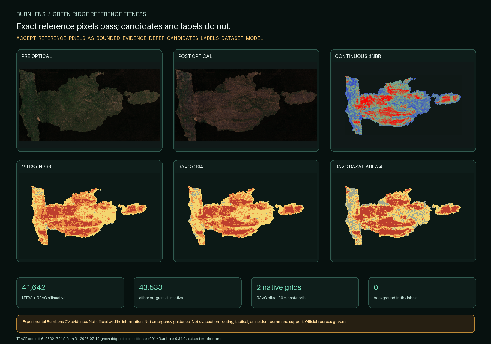

BURNLENS / PHASE TWO / ISSUE #477
Reference pixels pass; candidates and labels do not.

Exact selected products
| Program | Member | Native grid | Nodata | Domain |
|---|---|---|---|---|
| BAER | baer_or4446712160520200817_10015623_20200731_20200901_dnbr.tif | 487×347 | -32768.0 | continuous |
| MTBS | mtbs_or4446712160520200817_10021333_20200715_20210718_dnbr6.tif | 487×347 | 0.0 | {'0': 149373, '1': 274, '2': 7073, '3': 7644, '4': 4625} |
| RAVG | ravg_or4446712160520200817_10016049_20190925_20200929_rdnbr_ba4.tif | 487×347 | None | {'0': 149499, '1': 3033, '2': 6913, '3': 3718, '4': 5826} |
| RAVG | ravg_or4446712160520200817_10016049_20190925_20200929_rdnbr_cc5.tif | 487×347 | None | {'0': 149499, '1': 2827, '2': 7040, '3': 2056, '4': 1717, '5': 5850} |
| RAVG | ravg_or4446712160520200817_10016049_20190925_20200929_rdnbr_cbi4.tif | 487×347 | None | {'0': 149499, '1': 553, '2': 8021, '3': 6110, '4': 4806} |
All categorical comparisons use nearest-neighbor sampling from native 30 m to the verified 20 m optical grid. No resolution gain is claimed.
Source roles
MTBS: classes 2–4 are categorical burned-candidate evidence; class 1 is ambiguous, not background truth.
RAVG: CBI classes 2–4 are forest-calibrated burned-candidate evidence; unchanged class 1 is ambiguous outside its model and timing limits.
BAER: only unthresholded continuous change context is present. Restricted classified BARC/SBS rasters are absent.
Gate result
ACCEPT_REFERENCE_PIXELS_AS_BOUNDED_EVIDENCE_DEFER_CANDIDATES_LABELS_DATASET_MODEL
Burned-candidate proposal may proceed only as a separate bounded checkpoint with actual optical/reference evidence and owner yes/no/uncertain review. Affirmative background evidence remains unresolved.
Monitoring Trends in Burn Severity Project (U.S. Geological Survey and USDA Forest Service); USDA Forest Service; ESA (Contains modified Copernicus Sentinel data 2020); Contains modified Copernicus Sentinel data 2020, accessed through CDSE.
No independent ground truth, field validation, official status, endorsement, operational readiness, dataset, split, baseline, model, or accuracy claim exists.
Trace: commit 6c8582178fe8fa4ff48f48df2742d195618ae655 · BurnLens 0.34.0 · run BL-2026-07-19-green-ridge-reference-fitness-r001 · label schema burn-scar-five-state-schema-v0.1.0 · dataset/model none.